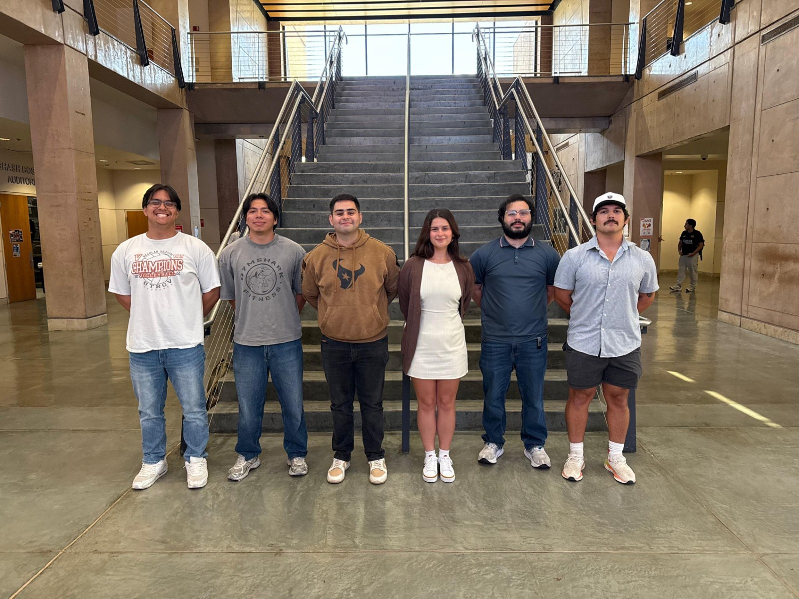
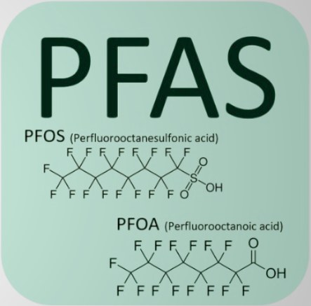
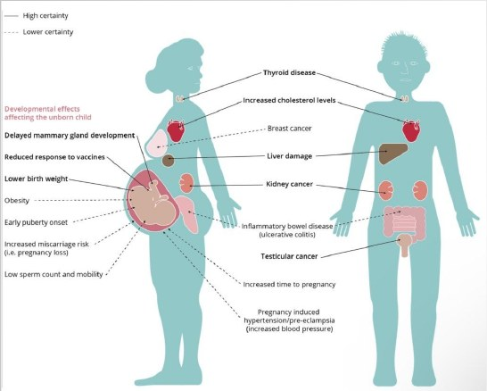
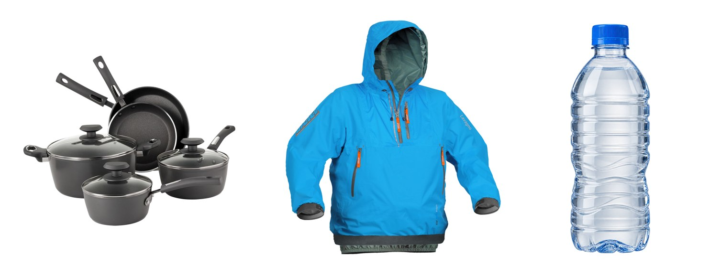
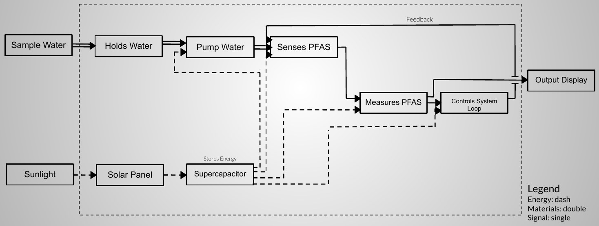
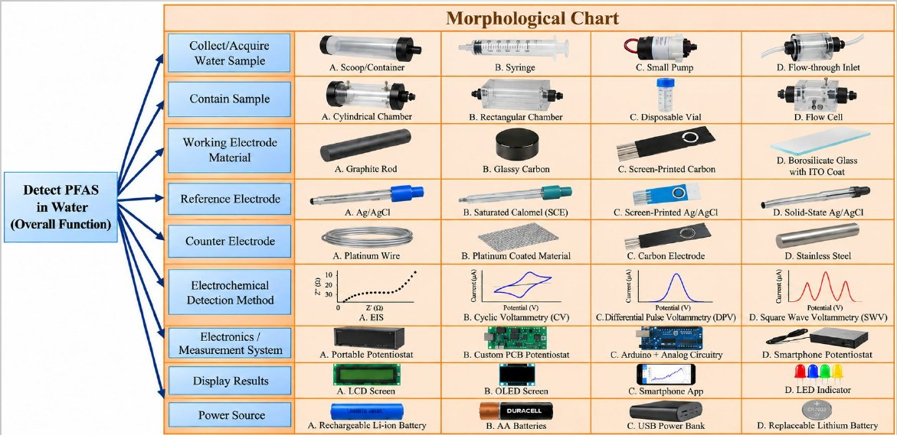
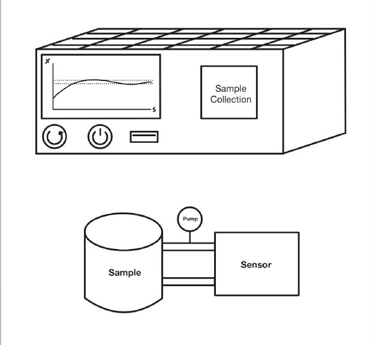
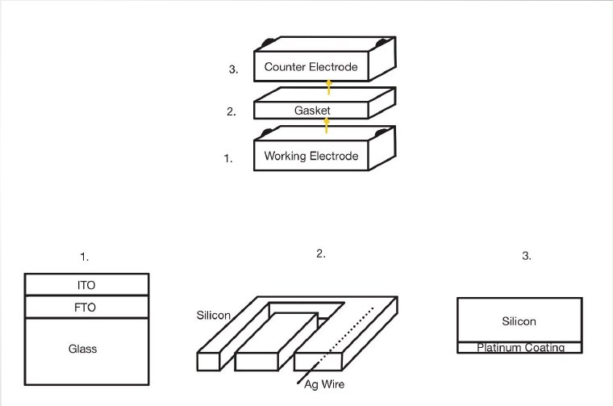

Engineering a New Approach to Water Monitoring
Team 10: Electrochem is an engineering team from the University of Texas Rio Grande Valley. We are researching, designing, and developing a compact electrochemical device to investigate PFAS contamination in water using electrochemical impedance spectroscopy (EIS).
Our approach combines electrochemical sensing, controlled water circulation, electrode engineering, data processing, and solar-assisted power into a proposed water-monitoring platform.
The People Behind Electrochem
Our team collaborates on research, material selection, design development, sensor integration, and prototype evaluation.

Team members, from left to right:
Salinas Edwin
Figueroa Jesus
Flores Danielle
Champine Jordan
Salinas Felipe
Elizondo
Faculty Advisors
Dr. Gyu Leem
Dr. Eleazar Marquez
Dr. Noe Vargas
We appreciate the guidance and technical support provided by our faculty advisors throughout the research and design process.
PFAS Contamination and Its Far-Reaching Effects
PFAS contamination presents a long-term challenge for water quality, environmental protection, and public health.
Per- and polyfluoroalkyl substances (PFAS) are a diverse group of synthetic fluorinated chemicals used in industrial processes and consumer products. Many are resistant to environmental degradation, allowing them to persist in water, soil, and ecosystems for extended periods.
Contamination may originate from industrial discharges, waste disposal, firefighting foams, and historical manufacturing practices. Some PFAS can migrate through groundwater and surface water, potentially reaching drinking-water sources and areas far from the original release.
Detecting these chemicals can be difficult because environmentally significant concentrations may be extremely low. Established laboratory methods typically require specialized analytical instruments, sample preparation, and trained personnel.
Persistent Contaminants
Many PFAS resist degradation and can remain in the environment for long periods.
Multiple Exposure Pathways
Certain PFAS can move through water, soil, food, and biological systems.
Complex Detection
Sensitive analytical techniques are needed to detect and identify PFAS at very low concentrations.
Understanding PFAS
What Are PFAS?
PFAS are a chemically diverse group of substances containing fluorinated carbon structures. Their strong carbon-fluorine bonds contribute to the stability of many compounds within this chemical family.
Two widely studied examples are perfluorooctanoic acid (PFOA) and perfluorooctane sulfonic acid (PFOS). Individual PFAS differ in their chemical behavior, environmental mobility, bioaccumulation, and toxicity.

Human Health Effects
Research has associated exposure to certain PFAS with several adverse health outcomes. The strength of scientific evidence depends on the individual PFAS compound and the health outcome being studied.
Reported associations include increased cholesterol levels, changes in liver enzymes, reduced antibody responses to some vaccines, and certain pregnancy-related complications.
PFAS and Cancer
Studies of PFOA exposure have reported associations with kidney and testicular cancer. The International Agency for Research on Cancer has classified PFOA as carcinogenic to humans.
These findings do not mean that every exposed person will develop cancer. Risk depends on the chemical, concentration, exposure duration, and other factors.

Environmental Impact
PFAS can move between surface water, groundwater, soils, sediments, and living organisms. Some compounds may accumulate in fish and other aquatic organisms through exposure to contaminated water and food.
Contaminated agricultural water, soil, or feed can create additional exposure pathways. Certain PFAS may be found in food products such as fish, meat, milk, eggs, and crops from affected environments.
The presence and concentration of PFAS vary considerably. This does not mean that all foods in these categories contain unsafe levels.
PFAS in Everyday Products
Certain PFAS have historically been used for their resistance to water, oil, heat, and chemical exposure. Applications have included some nonstick cookware coatings, water-resistant textiles, stain-resistant materials, industrial processes, and firefighting foams.
Manufacturing practices and product formulations have changed over time, and not every product in these categories contains PFAS.

A Compact Electrochemical Sensing System
Our proposed device uses electrochemical impedance spectroscopy to investigate changes in electrical impedance at an electrode interface.
The system is designed around a controlled water-circulation loop, a specialized electrode assembly, EIS instrumentation, data processing, and a proposed solar-assisted power system.
How the System Works
Water Reservoir
The water sample is stored in a reservoir that supplies the circulation system.
Water Pump
A miniature pump transports water from the reservoir toward the sensor.
Flow Gasket
Water enters a patterned silicone gasket that guides the sample across the electrode sensing region.
Electrochemical Measurement
The EIS instrument applies a small alternating electrical signal and measures the electrode response.
Recirculation
Water returns to the circulation loop for additional measurements under controlled conditions.
Data Processing
Impedance data are processed to identify useful electrochemical features and, after validation, estimate concentrations.
Display
The proposed interface displays processed measurement information for the user.
Solar-Assisted Power
A proposed solar-assisted electrical system supplies energy to the device. Final components remain under evaluation.
Functional Diagram

From Idea to Reality
Our design process began by identifying the functions required for a compact water-sensing platform. A morphological chart was developed to compare possible materials, components, electrode configurations, and system architectures.

Current Design Decisions
Working Electrode
Option D is the current selected working electrode concept. The sensing interface is being investigated for its response during impedance measurements.
Reference Electrode
Option D is tentatively preferred. The final reference electrode arrangement remains under evaluation.
Counter Electrode
Option A is the current design direction. The concept uses a glass substrate, a silver electrical connection, and a platinum-coated active surface.
Flow Gasket Development
The flow gasket is an important component because it controls the path of water through the electrode assembly while providing a sealing interface.
Our current concept uses a silicone gasket with a maze-like flow channel. Rather than allowing water to pass through an unrestricted chamber, the patterned channel directs water across the sensing region.
The geometry is intended to promote consistent electrode contact. However, pressure drop, residence time, stagnant regions, trapped air, and repeatability must be evaluated experimentally.
EIS and Power Selection
The final EIS instrument has not yet been selected. Similarly, the proposed solar-assisted power system requires additional component evaluation and integration planning.
Turning the Concept Into a Physical System
Prototype development allows our team to evaluate component placement, material compatibility, fluid handling, electrode spacing, and practical assembly constraints.
Overall Device Concept
The device concept integrates a water reservoir, miniature pump, electrochemical sensing assembly, EIS instrument, processing electronics, display, and proposed solar-assisted power.

Electrode Stack Concept
The sensor assembly uses a layered architecture consisting of electrodes and patterned flow components. The working electrode follows the selected Option D concept.
The current gasket concept uses pure silicone with a maze-like channel designed to direct water across the electrode sensing region.
A platinum wire is also being considered within the gasket assembly. Its final placement and electrical function will be confirmed during detailed design.
The proposed counter electrode uses a glass substrate with a silver electrical connection and a platinum-coated active surface.

Future Engineering Development
Material Selection
Finalize electrode materials, coatings, gaskets, and electrical connection methods.
Sensor Fabrication
Manufacture and assemble the patterned gasket and layered electrode components.
EIS Integration
Select instrumentation and establish electrical connections for impedance measurements.
Flow Testing
Investigate leakage, flow distribution, pressure drop, and measurement consistency.
Calibration
Evaluate sensitivity, selectivity, detection limits, and interfering substances.
System Integration
Integrate the pump, sensor, electronics, display, and power system.
The ultimate objective is to determine whether the proposed electrochemical sensing approach can produce reliable, repeatable PFAS-related measurements in water.
References and Further Reading
The following resources provide scientific background on PFAS exposure, health effects, food contamination, and environmental monitoring.
- CDC/ATSDR — PFAS Health Effects
- CDC/ATSDR — Human Exposure to PFAS
- FDA — PFAS in Food
- FDA — Questions and Answers on PFAS in Food
- IARC — Monographs on Carcinogenic Hazards
Engineering concepts described on this website represent the team's ongoing research and development activities.
Connect With Team Electrochem
For additional information about the senior design project, please contact:
Dr. Noe Vargas Hernandez
Acknowledgements
Team Electrochem thanks Dr. Gyu Leem, Dr. Eleazar Marquez, and Dr. Noe Vargas for their guidance and support.